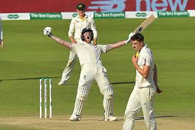

Ben Stokes
Role: All-Rounder
Bio: Ben Stokes is known for his aggressive batting and versatile bowling. He has been a key player for England in all formats and is celebrated for his match-winning performances, especially in high-pressure situations.
Career Stats
| Format | Matches | Innings | Not Outs | Runs | High Score | Average | Strike Rate | 100s | 50s | Wickets | Best Bowling |
|---|---|---|---|---|---|---|---|---|---|---|---|
| Test | 83 | 150 | 16 | 4000 | 258* | 36.09 | 75.35 | 11 | 24 | 175 | 6/22 |
| ODI | 113 | 93 | 14 | 3000 | 176 | 40.11 | 95.75 | 8 | 23 | 75 | 5/61 |
| T20I | 49 | 37 | 7 | 1000 | 101* | 27.03 | 138.18 | 2 | 6 | 25 | 3/15 |
Memorable Moments
Stokes' heroic innings in the 2019 World Cup final, where he scored 84 not out to help England lift the trophy.
His incredible performance in the 2019 Ashes Test at Headingley, scoring 135 not out to lead England to victory against Australia.